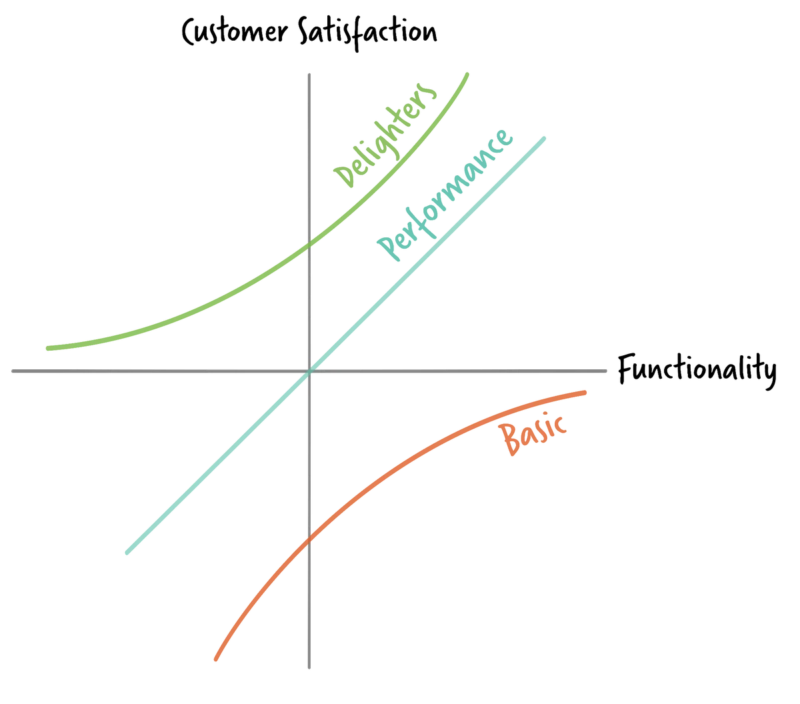
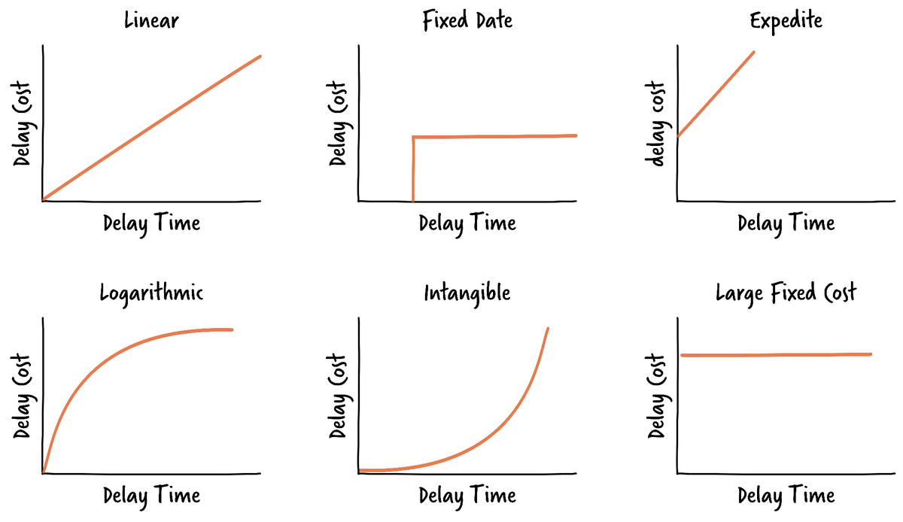

What value means
Prioritisation always comes down to one underlying question: what creates the most value for the least effort, and who decides. Because value is subjective, organisations need to agree, even loosely, on how they define it, and that definition can shift depending on context.
Absolute value tries to quantify impact directly, using measures such as net present value or return on investment, but this is often too slow and uncertain for everyday backlog work. Relative value sidesteps this by comparing items to each other rather than pricing them precisely, the way it's easier to say one piece of fruit looks heavier than another than to guess its exact weight.
The Kano model

The Kano model, developed by Noriaki Kano, plots features against customer satisfaction and sorts them into useful categories. Basic features are expected by default and draw complaints if missing. Performance features raise satisfaction roughly in proportion to how much you deliver. Delighters create disproportionate satisfaction precisely because nobody asked for them. Two categories are worth avoiding: features customers are indifferent to, and features that actively dissatisfy them.
Cost of Delay and WSJF

Cost of Delay estimates what it costs to not deliver something, by weighing an item's value against how quickly that value decays over time, and is especially useful for comparing items that look similar in effort but differ sharply in urgency. Weighted Shortest Job First builds on this: it divides Cost of Delay by job size, so smaller items with time-sensitive value naturally rise to the top, countering the trap of prioritising by size alone.
Simple techniques
Simpler techniques still have their place. Dot voting and Fist of Five let a group quickly gauge agreement. Triage, borrowed from emergency medicine, asks a blunter question: is this the most critical thing to act on right now. HIPPO, the Highest Paid Person's Opinion, remains the most common method in practice despite being the least reliable, since speed should rarely outrank the quality of the decision.
Templates
Printable A4 worksheets for applying this resource to your own product.
- Prioritisation Worksheet Score backlog items and rank them by WSJF. Download PDF
- Kano Model Sort candidate features into the five Kano categories. Download PDF